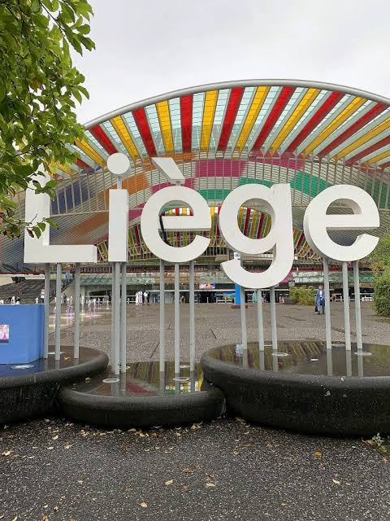

CityLoop Quest Liège


Le dimanche matin est idéal pour La Batte, à condition d’aimer la foule. Arrivez tôt pour profiter des étals sans être porté par le courant. Ensuite, un café ou une promenade vers le Grand Curtius prolonge naturellement l’ambiance des quais.
Les Coteaux sont splendides par temps clair, surtout lorsque la lumière descend sur les toits. Après la pluie, les marches et sentiers peuvent être glissants ; par forte chaleur, la montée de Bueren devient un petit test d’humilité.
Les musées sauvent merveilleusement les journées grises. Grand Curtius, La Boverie, Cité Miroir, Vie wallonne ou Aquarium-Muséum permettent de garder une visite riche même lorsque la météo fait sa mauvaise tête belge.
Pour les événements, vérifiez le calendrier : 15 août en Outremeuse, Week-end des Coteaux, expositions temporaires et animations des musées changent complètement l’atmosphère. Liège est souvent plus intéressante lorsqu’elle déborde de son programme habituel.